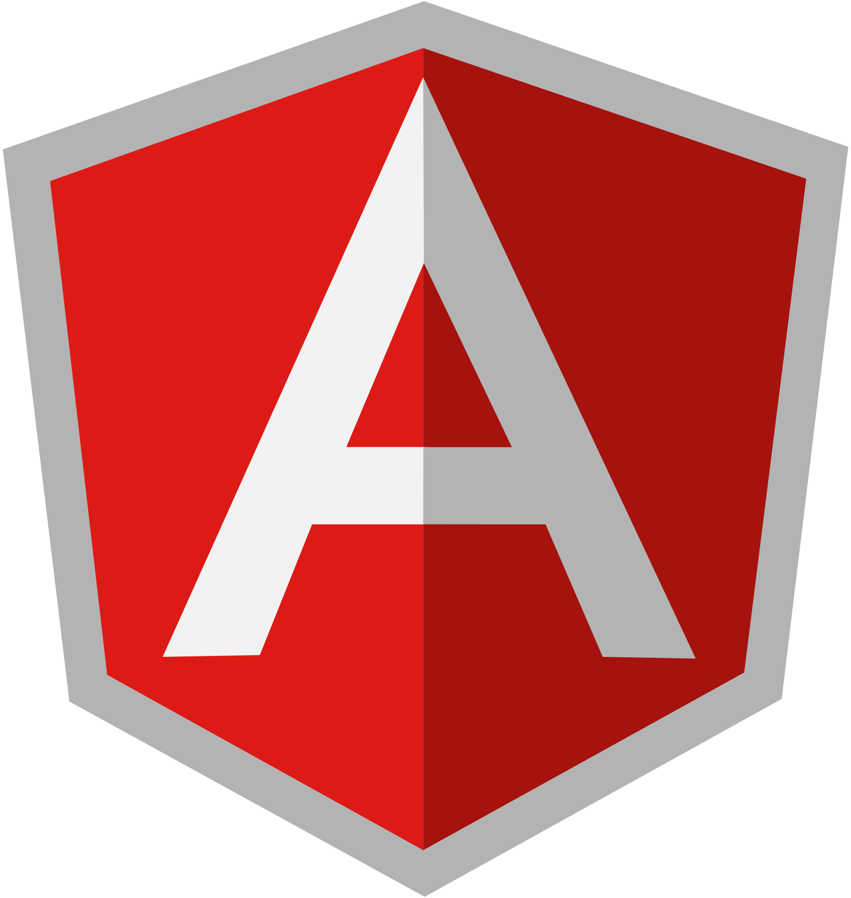
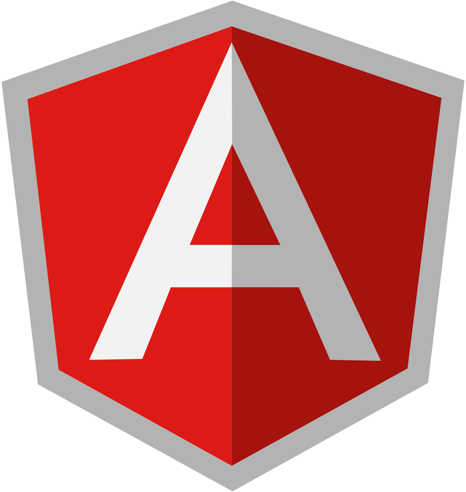

NatCobbinah
à propos de moi

I've had the taste of what it feels like to be a front-end, back-end, or combining both of these stack disciplines in my development as a professional developer.My plan to staying adaptable in the computing industry has been to have the requisite knowledge of best practices, tools and processes regarded by the industry to be optimal in building better systems that achieve business goals for individuals or corporate organizations, with top priority on establishing positive connections with clients. To sum it all, the end in sight is not only about moi-même seulement, but to making positive contributions in any environment of my presence.
Sample Personal Projects

BrailleCode Generator
Aids in converting braille to characters and vice versa. The goal of the project, is to help individuals use the code-base whatsoever they see fit to help in learning and teaching braille. Check-It-Out: npm package

Directional Drilling Calculator
Aids in understanding directional drilling for petroleum and earth science engineering majors, focusing on helping to visualize a drill hole and its equivalent estimated measures on field. Check-It-Out: npm package Check-It-Out: sourceforge GUI package

Payroll Mgmt System demo
A demo payroll management system for a firm, managing resources and personnel records using Springboot for developing restEndpoints and React as UI Frontend. Check-It-Out: CodeBase

Youtube Tutorials
The goal of my tutorials is to help solve problems faced in development using some of the major frameworks and programming languages. Check-It-Out: Tutorials

Rest API-Services Demo
Here, apiEndpoints are developed and tested, for learning purposes, using springboot or NodeJS, with swaggerAPI for documenting them, to understand the restful services and how to document them for consuming in frontendUI. Example: DemoApi
TechStack
Langugaes


Frameworks
 



Databases